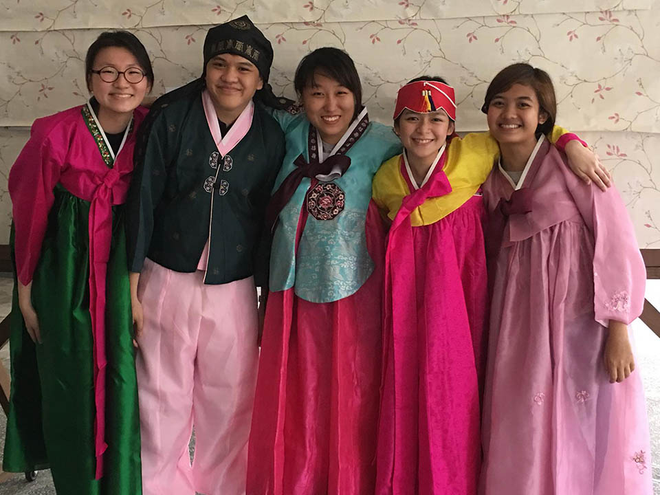
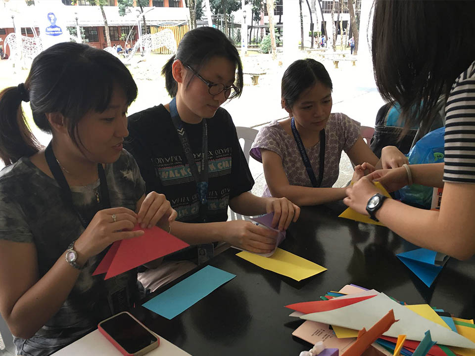

Blue Hanguk Society is a student organization that seeks to promote Korean culture within the Ateneo community. The student arm of the Ateneo Korean Studies Program, BlueHan provides opportunities for students to discover more about and express their appreciation for Korean culture.
What is BlueHan and what do we do?
Celebrating Korean culture and the coming together of its enthusiasts
Creating various avenues for students to learn more about and experience different aspects of Korean culture such as Korean food, Korean pop music, and Korean dramas
Providing opportunities for the students to gain exposure to and establish connections with offices and institutions promoting Korean culture such as the Ateneo Korean Studies Program and the Korean Cultural Center in the Philippines among others
Why should people join BlueHan?
As the Philippines continues to embrace Koreans and their culture, which can be seen in the growing number of Koreans in the country and the warm reception of Filipinos towards Korean culture, learning more about Korean culture becomes important because it allows students to gain a better grasp of how open Filipinos are to foreign influences. BlueHan, then, provides the Ateneo community with projects that showcase the different forms of the Korean Wave. Moreover, members are given the opportunity to meet co-Korean culture enthusiasts who share the same passion for Korean culture.


Vision
Blue Hanguk Society aspires to bring up a community instilled with an engaged perception on the Korean culture, celebrating its charismatic diversity in proud symbiosis with the unique Filipino identity.
Mission
Blue Hanguk Society strives to contribute to the intellectual, cultural, and social development of the community by uniting Korean culture enthusiasts from the Ateneo de Manila in the spirit of camaraderie and upheld Filipino identity to healthily hold avenues for the celebration of Korean culture.
 Passionately made by User Experience Society
Passionately made by User Experience Society